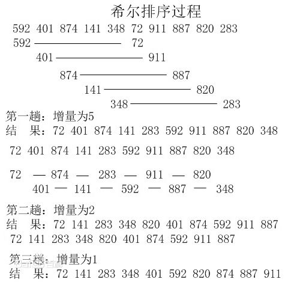

十大经典排序算法（第三话）
3、插入排序（Insertion Sort）
插入排序（Insertion-Sort）的算法描述是一种简单直观的排序算法。它的工作原理是通过构建有序序列，对于未排序数据，在已排序序列中从后向前扫描，找到相应位置并插入。插入排序在实现上，通常采用in-place排序（即只需用到O(1)的额外空间的排序），因而在从后向前扫描过程中，需要反复把已排序元素逐步向后挪位，为最新元素提供插入空间。
3.1 算法描述
一般来说，插入排序都采用in-place在数组上实现。具体算法描述如下：
- 从第一个元素开始，该元素可以认为已经被排序；
- 取出下一个元素，在已经排序的元素序列中从后向前扫描；
- 如果该元素（已排序）大于新元素，将该元素移到下一位置；
- 重复步骤3，直到找到已排序的元素小于或者等于新元素的位置；
- 将新元素插入到该位置后；
- 重复步骤2~5。
3.2 动图演示

3.2 代码实现
function insertionSort(arr) {
var len = arr.length;
var preIndex, current;
for (var i = 1; i < len; i++) {
preIndex = i - 1;
current = arr[i];
while(preIndex >= 0 && arr[preIndex] > current) {
arr[preIndex+1] = arr[preIndex];
preIndex--;
}
arr[preIndex+1] = current;
}
return arr;
}
3.4 算法分析
最佳情况：T(n) = O(n) 最坏情况：T(n) = O(n2) 平均情况：T(n) = O(n2)
4、希尔排序（Shell Sort）
1959年Shell发明，第一个突破O(n^2)的排序算法，是简单插入排序的改进版。它与插入排序的不同之处在于，它会优先比较距离较远的元素。希尔排序又叫缩小增量排序。
希尔排序的核心在于间隔序列的设定。既可以提前设定好间隔序列，也可以动态的定义间隔序列。动态定义间隔序列的算法是《算法（第4版》的合著者Robert Sedgewick提出的。
4.1 算法描述
先将整个待排序的记录序列分割成为若干子序列分别进行直接插入排序，具体算法描述：
- 选择一个增量序列t1，t2，…，tk，其中ti>tj，tk=1；
- 按增量序列个数k，对序列进行k 趟排序；
- 每趟排序，根据对应的增量ti，将待排序列分割成若干长度为m 的子序列，分别对各子表进行直接插入排序。仅增量因子为1 时，整个序列作为一个表来处理，表长度即为整个序列的长度。
4.2 过程演示

4.3 代码实现
function shellSort(arr) {
var len = arr.length,
temp,
gap = 1;
while(gap < len/3) { //动态定义间隔序列
gap =gap*3+1;
}
for (gap; gap> 0; gap = Math.floor(gap/3)) {
for (var i = gap; i < len; i++) {
temp = arr[i];
for (var j = i-gap; j > 0 && arr[j]> temp; j-=gap) {
arr[j+gap] = arr[j];
}
arr[j+gap] = temp;
}
}
return arr;
}
4.4 算法分析
最佳情况：T(n) = O(nlog2 n) 最坏情况：T(n) = O(nlog2 n) 平均情况：T(n) =O(nlog n)
<<上一篇：冒泡排序、选择排序
>>下一篇：归并排序、快速排序